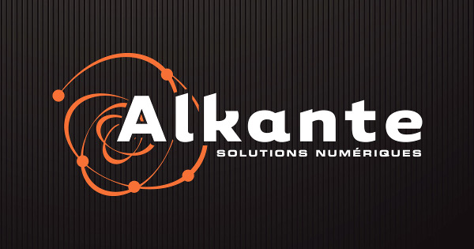
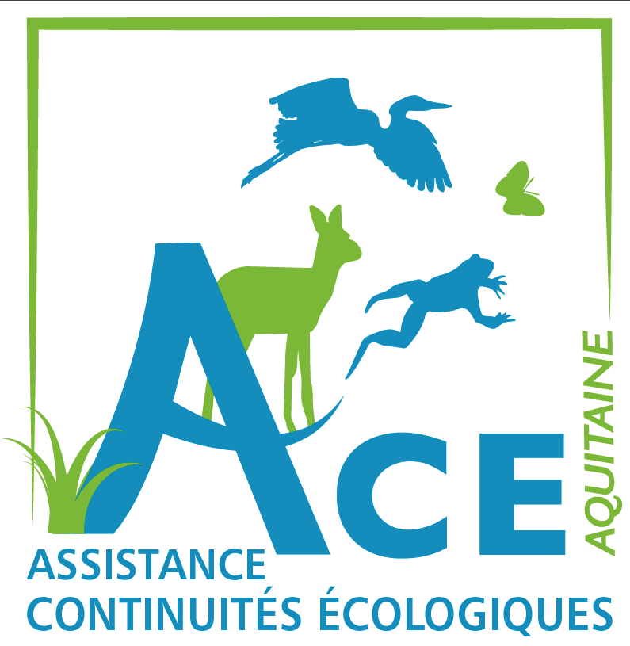
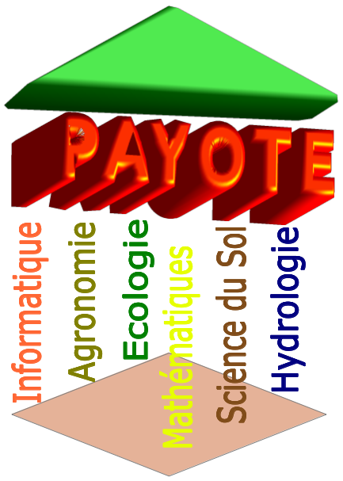

Development/Support
Chloe software is implemented and maintained by Hugues Boussard, BAGAP, SAD, INRA, France.
It is designed by Jacques Baudry and Hugues Boussard

The implementation of the QGIS plugin "Chloe - landscape metrics" has been done by ALKANTE.

link to the INRA Chloe software and its documentation
source code of the QGIS plugin "Chloe - landscape metrics" on github
The QGIS plugin "Chloe - landscape metrics" has been fiannce by ACE Nouvelle Aquitaine, UR C.A.U.E Nouvelle-Aquitaine, Nouvelle Aquitaine region and its prefecture, and Europe.
Special thanks to Yannick Coulaud.



Conceptual framework :
Chloe software is part of the APILand library and conceptually improved by the French research network INRA PAYOTE about landscape modelling and environmental process.
